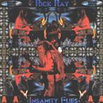

| Artist: | Rick Ray |
| Title: | Insanity Flies |
| Label: | Neurosis Records no catnr |
| Length(s): | 59 minutes |
| Year(s) of release: | 2001 |
| Month of review: | [02/2002] |
| 1) | The Glass Man | 6.37 |
| 2) | Guitartichoke | 4.21 |
| 3) | Missing Silhouettes | 2.01 |
| 4) | Killing Pawns | 4.45 |
| 5) | Power Gone Mad | 4.52 |
| 6) | Thought Invaders | 5.33 |
| 7) | They've Created A Monster | 6.29 |
| 8) | Beyond Belief | 4.17 |
| 9) | Any More? | 5.17 |
| 10) | Insanity Flies | 4.57 |
| 11) | Eyes, Lies And Spies | 7.52 |
| 12) | Nothing Is Right | 2.07 |
Guitartichoke is one those instrumental tracks. Pretty nice guitaring with neurotic hi-hatting and the expected drum computer. Okay-ish, but not more than that.
Missing Silhouettes is a pretty brief and tranquil guitar track, far more peaceful than you would expect. A nice intermezzo.
In Killing Pawns Rick expresses the idea that those who are now fighting for world submission, only played victim in the past, just to get the endorsement of the west. Quite an accusation to make. Rick's voice sounds more normal again, but the use of keyboards makes the track sound a little fuller than previous material.
Power Gone Mad is a pretty straight Rick guitar track. Not bad, but flowing by without you noticing it much.
Thought Invaders tells of the fear after the attacks. It tells of foes, fear and intimidation. From an American perspective. The music is not too rocky, more laid back. Pretty okay.
They've Created A Monster compares the US endorsement of Usama in the past to Hitler's practices. He shows some more criticism internally in this one. The track is bitter, the lyrics sung in a biting tone. Once again Schultz's reeds add to the track. Not a bad track.
Beyond Belief tells of the terror and disbelief on the moment planes drove into buildings. The, for once, clear sounding guitar solo has what appear news snippets in the back. The vocals are sung in Rick's normal droning tone, belying the shock of their contents.
Any More? is once again an instrumental track.
Insanity Flies focusses on the perspective of the worker who looked at the window right before a plane crashed in, and the hatred of the pilot. Once again a track featuring news snippets, and the reeds in the back.
Eyes, Lies And Spies is another instrumental, but more a reed instrumental than it is a guitar instrumental. Nice for a change, but compositionally the track isn't all that much of a challenge. The jangling guitar reminds me of Akkerman's in Focus's Hocus Pocus (I think, a Focus track anyway).
Nothing Is Right is a short atmospheric track. Pretty nice.